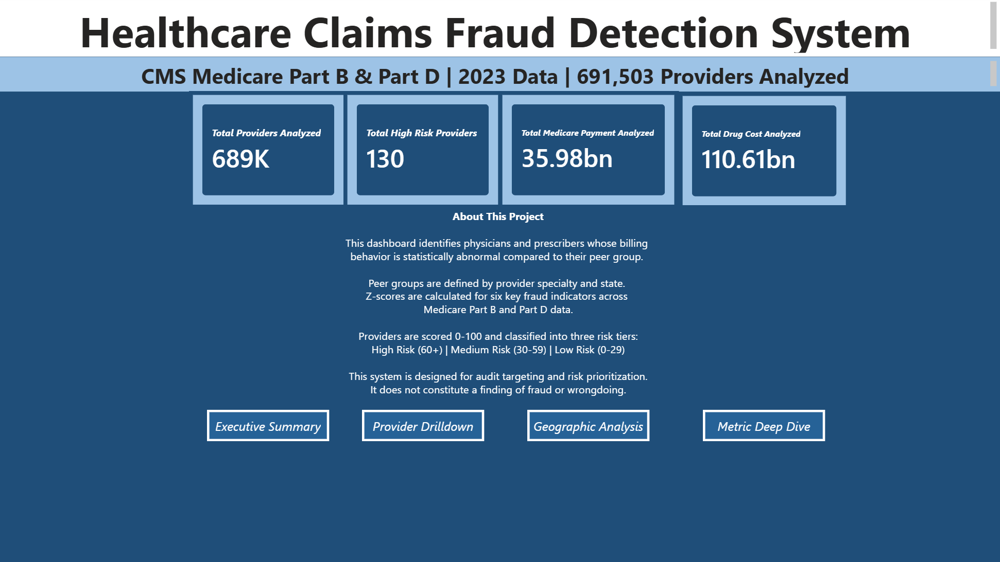

A provider-level anomaly detection system using statistical Z-score analysis to identify high-risk billing behavior across 691,000+ Medicare providers.
Medicare processes hundreds of billions in claims annually, making it a prime target for fraud, waste, and abuse. With 691,000+ active providers, traditional manual auditing cannot keep up.
An automated anomaly detection pipeline that scores every Medicare provider against their specialty and state peer group — turning 13.6M rows of raw claims data into a prioritized audit list.
